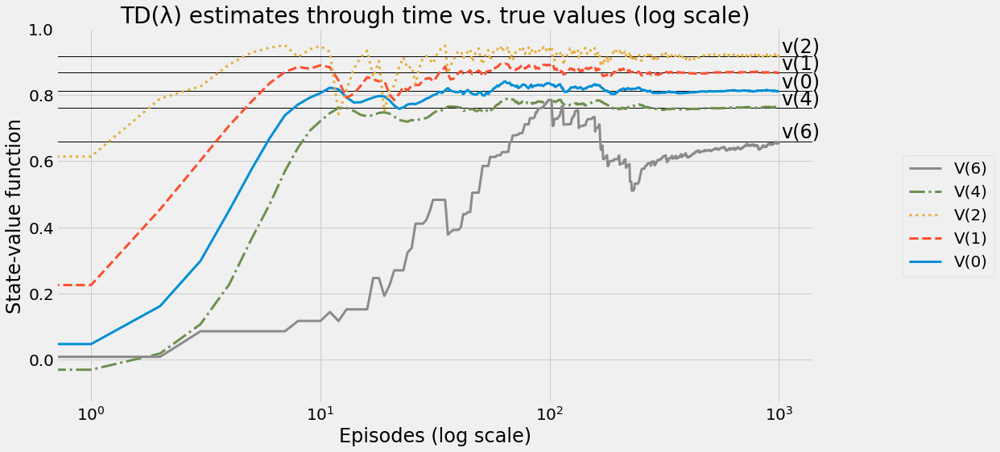

#collapse
!pip install tqdm numpy scikit-learn pyglet setuptools && \
!pip install gym asciinema pandas tabulate tornado==5.* PyBullet && \
!pip install git+https://github.com/pybox2d/pybox2d#egg=Box2D && \
!pip install git+https://github.com/mimoralea/gym-bandits#egg=gym-bandits && \
!pip install git+https://github.com/mimoralea/gym-walk#egg=gym-walk && \
!pip install git+https://github.com/mimoralea/gym-aima#egg=gym-aima && \
!pip install gym[atari]Evaluating Agents behaviors
그로킹 심층 강화학습 중 5장 내용인 “에이전트의 행동 평가”에 대한 내용입니다.
- hide: true
- toc: true
- badges: true
- comments: true
- author: Chanseok Kang
- categories: [Python, Reinforcement_Learning, Grokking_Deep_Reinforcement_Learning]
- permalink: /book/:title:output_ext
- search_exclude: false
Note: 실행을 위해 아래의 패키지들을 설치해주기 바랍니다.
활성 정책 첫 방문 MC 예측, 활성 정책 모든 방문 MC 예측, TD, n단계 TD, TD(λ)
import warnings ; warnings.filterwarnings('ignore')
import gym, gym_walk, gym_aima
import numpy as np
from pprint import pprint
from tqdm import tqdm_notebook as tqdm
from itertools import cycle, count
import random
import matplotlib
import matplotlib.pyplot as plt
import matplotlib.pylab as pylab
SEEDS = (12, 34, 56, 78, 90)
%matplotlib inlineplt.style.use('fivethirtyeight')
params = {
'figure.figsize': (15, 8),
'font.size': 24,
'legend.fontsize': 20,
'axes.titlesize': 28,
'axes.labelsize': 24,
'xtick.labelsize': 20,
'ytick.labelsize': 20
}
pylab.rcParams.update(params)
np.set_printoptions(suppress=True)실행에 필요한 helper function
def policy_evaluation(pi, P, gamma=1.0, theta=1e-10):
prev_V = np.zeros(len(P), dtype=np.float64)
while True:
V = np.zeros(len(P), dtype=np.float64)
for s in range(len(P)):
for prob, next_state, reward, done in P[s][pi(s)]:
V[s] += prob * (reward + gamma * prev_V[next_state] * (not done))
if np.max(np.abs(prev_V - V)) < theta:
break
prev_V = V.copy()
return Vdef print_policy(pi, P, action_symbols=('<', 'v', '>', '^'), n_cols=4, title='정책:'):
print(title)
arrs = {k:v for k,v in enumerate(action_symbols)}
for s in range(len(P)):
a = pi(s)
print("| ", end="")
if np.all([done for action in P[s].values() for _, _, _, done in action]):
print("".rjust(9), end=" ")
else:
print(str(s).zfill(2), arrs[a].rjust(6), end=" ")
if (s + 1) % n_cols == 0: print("|")def print_state_value_function(V, P, n_cols=4, prec=3, title='상태-가치 함수:'):
print(title)
for s in range(len(P)):
v = V[s]
print("| ", end="")
if np.all([done for action in P[s].values() for _, _, _, done in action]):
print("".rjust(9), end=" ")
else:
print(str(s).zfill(2), '{}'.format(np.round(v, prec)).rjust(6), end=" ")
if (s + 1) % n_cols == 0: print("|")def print_action_value_function(Q,
optimal_Q=None,
action_symbols=('<', '>'),
prec=3,
title='행동-가치 함수:'):
vf_types=('',) if optimal_Q is None else ('', '*', 'er')
headers = ['s',] + [' '.join(i) for i in list(itertools.product(vf_types, action_symbols))]
print(title)
states = np.arange(len(Q))[..., np.newaxis]
arr = np.hstack((states, np.round(Q, prec)))
if not (optimal_Q is None):
arr = np.hstack((arr, np.round(optimal_Q, prec), np.round(optimal_Q-Q, prec)))
print(tabulate(arr, headers, tablefmt="fancy_grid"))def probability_success(env, pi, goal_state, n_episodes=100, max_steps=200):
random.seed(123); np.random.seed(123) ; env.seed(123)
results = []
for _ in range(n_episodes):
state, done, steps = env.reset(), False, 0
while not done and steps < max_steps:
state, _, done, h = env.step(pi(state))
steps += 1
results.append(state == goal_state)
return np.sum(results)/len(results)*100def mean_return(env, gamma, pi, n_episodes=100, max_steps=200):
random.seed(123); np.random.seed(123) ; env.seed(123)
results = []
for _ in range(n_episodes):
state, done, steps = env.reset(), False, 0
results.append(0.0)
while not done and steps < max_steps:
state, reward, done, _ = env.step(pi(state))
results[-1] += (gamma**steps * reward)
steps += 1
return np.mean(results)def rmse(x, y, dp=4):
return np.round(np.sqrt(np.mean((x - y)**2)), dp)def plot_value_function(title, V_track, V_true=None, log=False, limit_value=0.05, limit_items=5):
np.random.seed(123)
per_col = 25
linecycler = cycle(["-","--",":","-."])
legends = []
valid_values = np.argwhere(V_track[-1] > limit_value).squeeze()
items_idxs = np.random.choice(valid_values,
min(len(valid_values), limit_items),
replace=False)
# draw the true values first
if V_true is not None:
for i, state in enumerate(V_track.T):
if i not in items_idxs:
continue
if state[-1] < limit_value:
continue
label = 'v({})'.format(i)
plt.axhline(y=V_true[i], color='k', linestyle='-', linewidth=1)
plt.text(int(len(V_track)*1.02), V_true[i]+.01, label)
# then the estimates
for i, state in enumerate(V_track.T):
if i not in items_idxs:
continue
if state[-1] < limit_value:
continue
line_type = next(linecycler)
label = 'V({})'.format(i)
p, = plt.plot(state, line_type, label=label, linewidth=3)
legends.append(p)
legends.reverse()
ls = []
for loc, idx in enumerate(range(0, len(legends), per_col)):
subset = legends[idx:idx+per_col]
l = plt.legend(subset, [p.get_label() for p in subset],
loc='center right', bbox_to_anchor=(1.25, 0.5))
ls.append(l)
[plt.gca().add_artist(l) for l in ls[:-1]]
if log: plt.xscale('log')
plt.title(title)
plt.ylabel('State-value function')
plt.xlabel('Episodes (log scale)' if log else 'Episodes')
plt.show()def plot_targets(targets, init_state, title):
x = range(len(targets[init_state]))
y = targets[init_state]
label = 'v({})'.format(init_state)
plt.axhline(y=V_true[init_state], color='k', linestyle='-', linewidth=1)
plt.text(int(x[-1]*1.02), V_true[init_state]+.01, label)
plt.scatter(x, y,
c=np.array(targets[init_state]),
cmap=plt.get_cmap('viridis'),
alpha=0.4)
plt.title(title)
plt.ylabel('Target value')
plt.xlabel('Estimate sequence number')
plt.show()def decay_schedule(init_value, min_value, decay_ratio, max_steps, log_start=-2, log_base=10):
decay_steps = int(max_steps * decay_ratio)
rem_steps = max_steps - decay_steps
values = np.logspace(log_start, 0, decay_steps, base=log_base, endpoint=True)[::-1]
values = (values - values.min()) / (values.max() - values.min())
values = (init_value - min_value) * values + min_value
values = np.pad(values, (0, rem_steps), 'edge')
return valuesplt.plot(decay_schedule(0.5, 0.01, 0.5, 500))
plt.title('Exponentially decaying schedule (for alpha)')
plt.xticks(rotation=45)
plt.show()랜덤 워크 / 동일한 확률을 가지는 임의의 정책을 수행한 결정 통로
env = gym.make('RandomWalk-v0')
init_state = env.reset()
goal_state = 6
gamma = 1.0
n_episodes = 500
P = env.env.P
LEFT, RIGHT = range(2)
pi = lambda s: {
0:LEFT, 1:LEFT, 2:LEFT, 3:LEFT, 4:LEFT, 5:LEFT, 6:LEFT
}[s]
V_true = policy_evaluation(pi, P, gamma=gamma)
print_state_value_function(V_true, P, n_cols=7)
print()
print_policy(pi, P, action_symbols=('<', '>'), n_cols=7)
print('Reaches goal {:.2f}%. Obtains an average return of {:.4f}.'.format(
probability_success(env, pi, goal_state=goal_state),
mean_return(env, gamma, pi)))상태-가치 함수:
| | 01 0.167 | 02 0.333 | 03 0.5 | 04 0.667 | 05 0.833 | |
정책:
| | 01 < | 02 < | 03 < | 04 < | 05 < | |
Reaches goal 53.00%. Obtains an average return of 0.5300.첫 방문 몬테카를로 예측
def generate_trajectory(pi, env, max_steps=200):
done, trajectory = False, []
while not done:
state = env.reset()
for t in count():
action = pi(state)
next_state, reward, done, _ = env.step(action)
experience = (state, action, reward, next_state, done)
trajectory.append(experience)
if done:
break
if t >= max_steps - 1:
trajectory = []
break
state = next_state
return np.array(trajectory, np.object)def mc_prediction(pi,
env,
gamma=1.0,
init_alpha=0.5,
min_alpha=0.01,
alpha_decay_ratio=0.5,
n_episodes=500,
max_steps=200,
first_visit=True):
nS = env.observation_space.n
discounts = np.logspace(0,
max_steps,
num=max_steps,
base=gamma,
endpoint=False)
alphas = decay_schedule(init_alpha,
min_alpha,
alpha_decay_ratio,
n_episodes)
V = np.zeros(nS, dtype=np.float64)
V_track = np.zeros((n_episodes, nS), dtype=np.float64)
targets = {state:[] for state in range(nS)}
for e in tqdm(range(n_episodes), leave=False):
trajectory = generate_trajectory(pi,
env,
max_steps)
visited = np.zeros(nS, dtype=np.bool)
for t, (state, _, reward, _, _) in enumerate(trajectory):
if visited[state] and first_visit:
continue
visited[state] = True
n_steps = len(trajectory[t:])
G = np.sum(discounts[:n_steps] * trajectory[t:, 2])
targets[state].append(G)
mc_error = G - V[state]
V[state] = V[state] + alphas[e] * mc_error
V_track[e] = V
return V.copy(), V_track, targetsV_fvmcs, V_track_fvmcs = [], []
for seed in tqdm(SEEDS, desc='All seeds', leave=True):
random.seed(seed); np.random.seed(seed) ; env.seed(seed)
V_fvmc, V_track_fvmc, targets_fvmc = mc_prediction(pi, env, gamma=gamma, n_episodes=n_episodes)
V_fvmcs.append(V_fvmc) ; V_track_fvmcs.append(V_track_fvmc)
V_fvmc, V_track_fvmc = np.mean(V_fvmcs, axis=0), np.mean(V_track_fvmcs, axis=0)
del V_fvmcs ; del V_track_fvmcsprint_state_value_function(V_fvmc, P, n_cols=7)
print()
print_state_value_function(V_fvmc - V_true, P, n_cols=7, title='State-value function errors:')
print('RMSE:', rmse(V_fvmc, V_true))상태-가치 함수:
| | 01 0.172 | 02 0.338 | 03 0.509 | 04 0.671 | 05 0.822 | |
State-value function errors:
| | 01 0.005 | 02 0.005 | 03 0.009 | 04 0.004 | 05 -0.011 | |
RMSE: 0.006plot_value_function('FVMC estimates through time vs. true values', V_track_fvmc, V_true, log=False)plot_value_function('FVMC estimates through time vs. true values (log scale)', V_track_fvmc, V_true, log=True)모든 방문 몬테카를로 예측
V_evmcs, V_track_evmcs = [], []
for seed in tqdm(SEEDS, desc='All seeds', leave=True):
random.seed(seed); np.random.seed(seed) ; env.seed(seed)
V_evmc, V_track_evmc, targets_evmc = mc_prediction(pi, env, gamma=gamma, n_episodes=n_episodes, first_visit=False)
V_evmcs.append(V_evmc) ; V_track_evmcs.append(V_track_evmc)
V_evmc, V_track_evmc = np.mean(V_evmcs, axis=0), np.mean(V_track_evmcs, axis=0)
del V_evmcs ; del V_track_evmcsprint_state_value_function(V_evmc, P, n_cols=7)
print()
print_state_value_function(V_evmc - V_true, P, n_cols=7, title='State-value function errors:')
print('RMSE:', rmse(V_evmc, V_true))상태-가치 함수:
| | 01 0.179 | 02 0.377 | 03 0.549 | 04 0.692 | 05 0.83 | |
State-value function errors:
| | 01 0.013 | 02 0.044 | 03 0.049 | 04 0.026 | 05 -0.004 | |
RMSE: 0.0271plot_value_function('EVMC estimates through time vs. true values', V_track_evmc, V_true, log=False)plot_value_function('EVMC estimates through time vs. true values (log scale)', V_track_evmc, V_true, log=True)시간차 예측 (TD)
def td(pi,
env,
gamma=1.0,
init_alpha=0.5,
min_alpha=0.01,
alpha_decay_ratio=0.5,
n_episodes=500):
nS = env.observation_space.n
V = np.zeros(nS, dtype=np.float64)
V_track = np.zeros((n_episodes, nS), dtype=np.float64)
targets = {state:[] for state in range(nS)}
alphas = decay_schedule(
init_alpha, min_alpha,
alpha_decay_ratio, n_episodes)
for e in tqdm(range(n_episodes), leave=False):
state, done = env.reset(), False
while not done:
action = pi(state)
next_state, reward, done, _ = env.step(action)
td_target = reward + gamma * V[next_state] * (not done)
targets[state].append(td_target)
td_error = td_target - V[state]
V[state] = V[state] + alphas[e] * td_error
state = next_state
V_track[e] = V
return V, V_track, targetsV_tds, V_track_tds = [], []
for seed in tqdm(SEEDS, desc='All seeds', leave=True):
random.seed(seed); np.random.seed(seed) ; env.seed(seed)
V_td, V_track_td, targets_td = td(pi, env, gamma=gamma, n_episodes=n_episodes)
V_tds.append(V_td) ; V_track_tds.append(V_track_td)
V_td, V_track_td = np.mean(V_tds, axis=0), np.mean(V_track_tds, axis=0)
del V_tds ; del V_track_tdsprint_state_value_function(V_td, P, n_cols=7)
print()
print_state_value_function(V_td - V_true, P, n_cols=7, title='State-value function errors:')
print('RMSE:', rmse(V_td, V_true))상태-가치 함수:
| | 01 0.166 | 02 0.335 | 03 0.511 | 04 0.67 | 05 0.835 | |
State-value function errors:
| | 01 -0.0 | 02 0.001 | 03 0.011 | 04 0.003 | 05 0.001 | |
RMSE: 0.0043plot_value_function('TD estimates through time vs. true values', V_track_td, V_true, log=False)plot_value_function('TD estimates through time vs. true values (log scale)', V_track_td, V_true, log=True)몬테카를로와 TD간의 비교
plot_value_function('FVMC estimates through time (close up)', V_track_fvmc[:20], None, log=False)plot_value_function('EVMC estimates through time (close up)', V_track_evmc[:20], None, log=False)plot_value_function('TD estimates through time (close up)', V_track_td[:20], None, log=False)plot_targets(targets_fvmc, init_state, title='FVMC target sequence')plot_targets(targets_evmc, init_state, title='EVMC target sequence')plot_targets(targets_td, init_state, title='TD target sequence')n단계 TD
def ntd(pi,
env,
gamma=1.0,
init_alpha=0.5,
min_alpha=0.01,
alpha_decay_ratio=0.5,
n_step=3,
n_episodes=500):
nS = env.observation_space.n
V = np.zeros(nS, dtype=np.float64)
V_track = np.zeros((n_episodes, nS), dtype=np.float64)
discounts = np.logspace(0, n_step+1, num=n_step+1, base=gamma, endpoint=False)
alphas = decay_schedule(
init_alpha, min_alpha,
alpha_decay_ratio, n_episodes)
for e in tqdm(range(n_episodes), leave=False):
state, done, path = env.reset(), False, []
while not done or path is not None:
path = path[1:]
while not done and len(path) < n_step:
action = pi(state)
next_state, reward, done, _ = env.step(action)
experience = (state, reward, next_state, done)
path.append(experience)
state = next_state
if done:
break
n = len(path)
est_state = path[0][0]
rewards = np.array(path)[:,1]
partial_return = discounts[:n] * rewards
bs_val = discounts[-1] * V[next_state] * (not done)
ntd_target = np.sum(np.append(partial_return, bs_val))
ntd_error = ntd_target - V[est_state]
V[est_state] = V[est_state] + alphas[e] * ntd_error
if len(path) == 1 and path[0][3]:
path = None
V_track[e] = V
return V, V_trackV_ntds, V_track_ntds = [], []
for seed in tqdm(SEEDS, desc='All seeds', leave=True):
random.seed(seed); np.random.seed(seed) ; env.seed(seed)
V_ntd, V_track_ntd = ntd(pi, env, gamma=gamma, n_episodes=n_episodes)
V_ntds.append(V_ntd) ; V_track_ntds.append(V_track_ntd)
V_ntd, V_track_ntd = np.mean(V_ntds, axis=0), np.mean(V_track_ntds, axis=0)
del V_ntds ; del V_track_ntdsprint_state_value_function(V_ntd, P, n_cols=7)
print()
print_state_value_function(V_ntd - V_true, P, n_cols=7, title='State-value function errors:')
print('RMSE:', rmse(V_ntd, V_true))상태-가치 함수:
| | 01 0.174 | 02 0.344 | 03 0.516 | 04 0.673 | 05 0.826 | |
State-value function errors:
| | 01 0.007 | 02 0.011 | 03 0.016 | 04 0.006 | 05 -0.007 | |
RMSE: 0.0087plot_value_function('n-step TD estimates through time vs. true values', V_track_ntd, V_true, log=False)plot_value_function('n-step TD estimates through time vs. true values (log scale)', V_track_ntd, V_true, log=True)plot_value_function('n-step TD estimates through time (close up)', V_track_ntd[:20], None, log=False)TD(λ)
def td_lambda(pi,
env,
gamma=1.0,
init_alpha=0.5,
min_alpha=0.01,
alpha_decay_ratio=0.5,
lambda_=0.3,
n_episodes=500):
nS = env.observation_space.n
V = np.zeros(nS, dtype=np.float64)
E = np.zeros(nS, dtype=np.float64)
V_track = np.zeros((n_episodes, nS), dtype=np.float64)
alphas = decay_schedule(
init_alpha, min_alpha,
alpha_decay_ratio, n_episodes)
for e in tqdm(range(n_episodes), leave=False):
E.fill(0)
state, done = env.reset(), False
while not done:
action = pi(state)
next_state, reward, done, _ = env.step(action)
td_target = reward + gamma * V[next_state] * (not done)
td_error = td_target - V[state]
E[state] = E[state] + 1
V = V + alphas[e] * td_error * E
E = gamma * lambda_ * E
state = next_state
V_track[e] = V
return V, V_trackV_tdls, V_track_tdls = [], []
for seed in tqdm(SEEDS, desc='All seeds', leave=True):
random.seed(seed); np.random.seed(seed) ; env.seed(seed)
V_tdl, V_track_tdl = td_lambda(pi, env, gamma=gamma, n_episodes=n_episodes)
V_tdls.append(V_tdl) ; V_track_tdls.append(V_track_tdl)
V_tdl, V_track_tdl = np.mean(V_tdls, axis=0), np.mean(V_track_tdls, axis=0)
del V_tdls ; del V_track_tdlsprint_state_value_function(V_tdl, P, n_cols=7)
print()
print_state_value_function(V_tdl - V_true, P, n_cols=7, title='State-value function errors:')
print('RMSE:', rmse(V_tdl, V_true))상태-가치 함수:
| | 01 0.169 | 02 0.338 | 03 0.512 | 04 0.67 | 05 0.833 | |
State-value function errors:
| | 01 0.002 | 02 0.005 | 03 0.012 | 04 0.003 | 05 -0.0 | |
RMSE: 0.005plot_value_function('TD(λ) estimates through time vs. true values', V_track_tdl, V_true, log=False)plot_value_function('TD(λ) estimates through time vs. true values (log scale)', V_track_tdl, V_true, log=True)plot_value_function('TD(λ) estimates through time (close up)', V_track_tdl[:20], None, log=False)Russell & Norvig의 Gridworld 환경에서의 정책
env = gym.make('RussellNorvigGridworld-v0')
init_state = env.reset()
goal_state = 3
gamma = 1.0
n_episodes = 1000
P = env.env.P
LEFT, DOWN, RIGHT, UP = range(4)
pi = lambda s: {
0:RIGHT, 1:RIGHT, 2:RIGHT, 3:LEFT,
4:UP, 5:LEFT, 6:UP, 7:LEFT,
8:UP, 9:LEFT, 10:LEFT, 11:LEFT
}[s]
V_true = policy_evaluation(pi, P, gamma=gamma)
print_state_value_function(V_true, P)
print()
print_policy(pi, P)
print('Reaches goal {:.2f}%. Obtains an average return of {:.4f}.'.format(
probability_success(env, pi, goal_state=goal_state),
mean_return(env, gamma, pi)))상태-가치 함수:
| 00 0.812 | 01 0.868 | 02 0.918 | |
| 04 0.762 | | 06 0.66 | |
| 08 0.705 | 09 0.655 | 10 0.611 | 11 0.388 |
정책:
| 00 > | 01 > | 02 > | |
| 04 ^ | | 06 ^ | |
| 08 ^ | 09 < | 10 < | 11 < |
Reaches goal 96.00%. Obtains an average return of 0.6424.Russell & Norvig의 Gridworld 환경에서의 정책 추정 (정책을 상태-가치 함수로 변환)
V_fvmcs, V_track_fvmcs = [], []
for seed in tqdm(SEEDS, desc='All seeds', leave=True):
random.seed(seed); np.random.seed(seed) ; env.seed(seed)
V_fvmc, V_track_fvmc, targets_fvmc = mc_prediction(pi, env, gamma=gamma, n_episodes=n_episodes)
V_fvmcs.append(V_fvmc) ; V_track_fvmcs.append(V_track_fvmc)
V_fvmc, V_track_fvmc = np.mean(V_fvmcs, axis=0), np.mean(V_track_fvmcs, axis=0)
del V_fvmcs ; del V_track_fvmcsprint_state_value_function(V_fvmc, P)
print()
print_state_value_function(V_fvmc - V_true, P, title='State-value function errors:')
print('RMSE:', rmse(V_fvmc, V_true))상태-가치 함수:
| 00 0.81 | 01 0.867 | 02 0.918 | |
| 04 0.759 | | 06 0.669 | |
| 08 0.703 | 09 0.643 | 10 0.0 | 11 0.0 |
State-value function errors:
| 00 -0.001 | 01 -0.001 | 02 0.0 | |
| 04 -0.002 | | 06 0.008 | |
| 08 -0.002 | 09 -0.012 | 10 -0.611 | 11 -0.388 |
RMSE: 0.2091V_evmcs, V_track_evmcs = [], []
for seed in tqdm(SEEDS, desc='All seeds', leave=True):
random.seed(seed); np.random.seed(seed) ; env.seed(seed)
V_evmc, V_track_evmc, targets_evmc = mc_prediction(pi, env, gamma=gamma, n_episodes=n_episodes, first_visit=False)
V_evmcs.append(V_evmc) ; V_track_evmcs.append(V_track_evmc)
V_evmc, V_track_evmc = np.mean(V_evmcs, axis=0), np.mean(V_track_evmcs, axis=0)
del V_evmcs ; del V_track_evmcsprint_state_value_function(V_evmc, P)
print()
print_state_value_function(V_evmc - V_true, P, title='State-value function errors:')
print('RMSE:', rmse(V_evmc, V_true))상태-가치 함수:
| 00 0.809 | 01 0.867 | 02 0.918 | |
| 04 0.748 | | 06 0.68 | |
| 08 0.696 | 09 0.636 | 10 0.0 | 11 0.0 |
State-value function errors:
| 00 -0.003 | 01 -0.0 | 02 0.001 | |
| 04 -0.013 | | 06 0.02 | |
| 08 -0.009 | 09 -0.019 | 10 -0.611 | 11 -0.388 |
RMSE: 0.2092V_tds, V_track_tds = [], []
for seed in tqdm(SEEDS, desc='All seeds', leave=True):
random.seed(seed); np.random.seed(seed) ; env.seed(seed)
V_td, V_track_td, targets_td = td(pi, env, gamma=gamma, n_episodes=n_episodes)
V_tds.append(V_td) ; V_track_tds.append(V_track_td)
V_td, V_track_td = np.mean(V_tds, axis=0), np.mean(V_track_tds, axis=0)
del V_tds ; del V_track_tdsprint_state_value_function(V_td, P)
print()
print_state_value_function(V_td - V_true, P, title='State-value function errors:')
print('RMSE:', rmse(V_td, V_true))상태-가치 함수:
| 00 0.811 | 01 0.867 | 02 0.913 | |
| 04 0.761 | | 06 0.651 | |
| 08 0.704 | 09 0.643 | 10 0.0 | 11 0.0 |
State-value function errors:
| 00 -0.001 | 01 -0.001 | 02 -0.005 | |
| 04 -0.001 | | 06 -0.01 | |
| 08 -0.001 | 09 -0.012 | 10 -0.611 | 11 -0.388 |
RMSE: 0.2091V_ntds, V_track_ntds = [], []
for seed in tqdm(SEEDS, desc='All seeds', leave=True):
random.seed(seed); np.random.seed(seed) ; env.seed(seed)
V_ntd, V_track_ntd = ntd(pi, env, gamma=gamma, n_episodes=n_episodes)
V_ntds.append(V_ntd) ; V_track_ntds.append(V_track_ntd)
V_ntd, V_track_ntd = np.mean(V_ntds, axis=0), np.mean(V_track_ntds, axis=0)
del V_ntds ; del V_track_ntdsprint_state_value_function(V_ntd, P)
print()
print_state_value_function(V_ntd - V_true, P, title='State-value function errors:')
print('RMSE:', rmse(V_ntd, V_true))상태-가치 함수:
| 00 0.808 | 01 0.868 | 02 0.915 | |
| 04 0.763 | | 06 0.674 | |
| 08 0.705 | 09 0.659 | 10 0.0 | 11 0.0 |
State-value function errors:
| 00 -0.003 | 01 0.0 | 02 -0.002 | |
| 04 0.001 | | 06 0.014 | |
| 08 0.0 | 09 0.004 | 10 -0.611 | 11 -0.388 |
RMSE: 0.2091V_tdls, V_track_tdls = [], []
for seed in tqdm(SEEDS, desc='All seeds', leave=True):
random.seed(seed); np.random.seed(seed) ; env.seed(seed)
V_tdl, V_track_tdl = td_lambda(pi, env, gamma=gamma, n_episodes=n_episodes)
V_tdls.append(V_tdl) ; V_track_tdls.append(V_track_tdl)
V_tdl, V_track_tdl = np.mean(V_tdls, axis=0), np.mean(V_track_tdls, axis=0)
del V_tdls ; del V_track_tdlsprint_state_value_function(V_tdl, P)
print()
print_state_value_function(V_tdl - V_true, P, title='State-value function errors:')
print('RMSE:', rmse(V_tdl, V_true))상태-가치 함수:
| 00 0.811 | 01 0.867 | 02 0.915 | |
| 04 0.761 | | 06 0.655 | |
| 08 0.706 | 09 0.651 | 10 0.0 | 11 0.0 |
State-value function errors:
| 00 -0.0 | 01 -0.001 | 02 -0.003 | |
| 04 -0.0 | | 06 -0.005 | |
| 08 0.001 | 09 -0.004 | 10 -0.611 | 11 -0.388 |
RMSE: 0.209Russell & Norvig의 Gridworld 환경에서의 상태-가치 함수 추정
plot_value_function('FVMC estimates through time vs. true values', V_track_fvmc, V_true, log=False)plot_value_function('EVMC estimates through time vs. true values', V_track_evmc, V_true, log=False)plot_value_function('TD estimates through time vs. true values', V_track_td, V_true, log=False)plot_value_function('n-step TD estimates through time vs. true values', V_track_ntd, V_true, log=False)plot_value_function('TD(λ) estimates through time vs. true values', V_track_tdl, V_true, log=False)Russell & Norvig의 Gridworld 환경에서의 상태-가치 함수 추정 (x축에 대해서는 log scale 적용)
plot_value_function('FVMC estimates through time vs. true values (log scale)', V_track_fvmc, V_true, log=True)plot_value_function('EVMC estimates through time vs. true values (log scale)', V_track_evmc, V_true, log=True)
plot_value_function('TD estimates through time vs. true values (log scale)', V_track_td, V_true, log=True)
plot_value_function('n-step TD estimates through time vs. true values (log scale)', V_track_ntd, V_true, log=True)plot_value_function('TD(λ) estimates through time vs. true values (log scale)', V_track_tdl, V_true, log=True)
결과에 대한 확대
plot_value_function('FVMC estimates through time (close up)', V_track_fvmc[:50], None, log=False)plot_value_function('EVMC estimates through time (close up)', V_track_evmc[:50], None, log=False)plot_value_function('TD estimates through time (close up)', V_track_td[:50], None, log=False)plot_value_function('n-step TD estimates through time (close up)', V_track_ntd[:50], None, log=False)plot_value_function('TD(λ) estimates through time (close up)', V_track_tdl[:50], None, log=False)몬테카를로와 TD간의 비교
plot_targets(targets_fvmc, init_state, title='FVMC target sequence')plot_targets(targets_evmc, init_state, title='EVMC target sequence')plot_targets(targets_td, init_state, title='TD target sequence')프로즌레이크 환경에서의 샘플 정책
env = gym.make('FrozenLake-v0')
init_state = env.reset()
goal_state = 15
gamma = 0.99
n_episodes = 2500
P = env.env.P
LEFT, DOWN, RIGHT, UP = range(4)
pi = lambda s: {
0:LEFT, 1:UP, 2:UP, 3:UP,
4:LEFT, 5:LEFT, 6:LEFT, 7:LEFT,
8:UP, 9:DOWN, 10:LEFT, 11:LEFT,
12:LEFT, 13:RIGHT, 14:DOWN, 15:LEFT
}[s]
V_true = policy_evaluation(pi, P, gamma=gamma)
print_state_value_function(V_true, P)
print()
print_policy(pi, P)
print('Reaches goal {:.2f}%. Obtains an average return of {:.4f}.'.format(
probability_success(env, pi, goal_state=goal_state),
mean_return(env, gamma, pi)))상태-가치 함수:
| 00 0.542 | 01 0.499 | 02 0.471 | 03 0.457 |
| 04 0.558 | | 06 0.358 | |
| 08 0.592 | 09 0.643 | 10 0.615 | |
| | 13 0.742 | 14 0.863 | |
정책:
| 00 < | 01 ^ | 02 ^ | 03 ^ |
| 04 < | | 06 < | |
| 08 ^ | 09 v | 10 < | |
| | 13 > | 14 v | |
Reaches goal 74.00%. Obtains an average return of 0.5116.프로즌레이크 환경에서의 정책 추정 (정책을 상태-가치 함수로 변환)
V_fvmcs, V_track_fvmcs = [], []
for seed in tqdm(SEEDS, desc='All seeds', leave=True):
random.seed(seed); np.random.seed(seed) ; env.seed(seed)
V_fvmc, V_track_fvmc, targets_fvmc = mc_prediction(pi, env, gamma=gamma, n_episodes=n_episodes)
V_fvmcs.append(V_fvmc) ; V_track_fvmcs.append(V_track_fvmc)
V_fvmc, V_track_fvmc = np.mean(V_fvmcs, axis=0), np.mean(V_track_fvmcs, axis=0)
del V_fvmcs ; del V_track_fvmcsprint_state_value_function(V_fvmc, P)
print()
print_state_value_function(V_fvmc - V_true, P, title='State-value function errors:')
print('RMSE:', rmse(V_fvmc, V_true))상태-가치 함수:
| 00 0.528 | 01 0.359 | 02 0.336 | 03 0.313 |
| 04 0.544 | | 06 0.296 | |
| 08 0.575 | 09 0.618 | 10 0.579 | |
| | 13 0.712 | 14 0.841 | |
State-value function errors:
| 00 -0.014 | 01 -0.14 | 02 -0.135 | 03 -0.143 |
| 04 -0.014 | | 06 -0.063 | |
| 08 -0.016 | 09 -0.025 | 10 -0.037 | |
| | 13 -0.03 | 14 -0.022 | |
RMSE: 0.0643V_evmcs, V_track_evmcs = [], []
for seed in tqdm(SEEDS, desc='All seeds', leave=True):
random.seed(seed); np.random.seed(seed) ; env.seed(seed)
V_evmc, V_track_evmc, targets_evmc = mc_prediction(pi, env, gamma=gamma, n_episodes=n_episodes, first_visit=False)
V_evmcs.append(V_evmc) ; V_track_evmcs.append(V_track_evmc)
V_evmc, V_track_evmc = np.mean(V_evmcs, axis=0), np.mean(V_track_evmcs, axis=0)
del V_evmcs ; del V_track_evmcsprint_state_value_function(V_evmc, P)
print()
print_state_value_function(V_evmc - V_true, P, title='State-value function errors:')
print('RMSE:', rmse(V_evmc, V_true))상태-가치 함수:
| 00 0.456 | 01 0.323 | 02 0.278 | 03 0.277 |
| 04 0.49 | | 06 0.277 | |
| 08 0.519 | 09 0.561 | 10 0.531 | |
| | 13 0.668 | 14 0.836 | |
State-value function errors:
| 00 -0.086 | 01 -0.176 | 02 -0.192 | 03 -0.179 |
| 04 -0.069 | | 06 -0.082 | |
| 08 -0.072 | 09 -0.082 | 10 -0.084 | |
| | 13 -0.074 | 14 -0.027 | |
RMSE: 0.095V_tds, V_track_tds = [], []
for seed in tqdm(SEEDS, desc='All seeds', leave=True):
random.seed(seed); np.random.seed(seed) ; env.seed(seed)
V_td, V_track_td, targets_td = td(pi, env, gamma=gamma, n_episodes=n_episodes)
V_tds.append(V_td) ; V_track_tds.append(V_track_td)
V_td, V_track_td = np.mean(V_tds, axis=0), np.mean(V_track_tds, axis=0)
del V_tds ; del V_track_tdsprint_state_value_function(V_td, P)
print()
print_state_value_function(V_td - V_true, P, title='State-value function errors:')
print('RMSE:', rmse(V_td, V_true))상태-가치 함수:
| 00 0.508 | 01 0.451 | 02 0.417 | 03 0.401 |
| 04 0.527 | | 06 0.337 | |
| 08 0.566 | 09 0.62 | 10 0.592 | |
| | 13 0.722 | 14 0.851 | |
State-value function errors:
| 00 -0.034 | 01 -0.048 | 02 -0.054 | 03 -0.056 |
| 04 -0.031 | | 06 -0.021 | |
| 08 -0.025 | 09 -0.023 | 10 -0.023 | |
| | 13 -0.02 | 14 -0.012 | |
RMSE: 0.0287V_ntds, V_track_ntds = [], []
for seed in tqdm(SEEDS, desc='All seeds', leave=True):
random.seed(seed); np.random.seed(seed) ; env.seed(seed)
V_ntd, V_track_ntd = ntd(pi, env, gamma=gamma, n_episodes=n_episodes)
V_ntds.append(V_ntd) ; V_track_ntds.append(V_track_ntd)
V_ntd, V_track_ntd = np.mean(V_ntds, axis=0), np.mean(V_track_ntds, axis=0)
del V_ntds ; del V_track_ntdsprint_state_value_function(V_ntd, P)
print()
print_state_value_function(V_ntd - V_true, P, title='State-value function errors:')
print('RMSE:', rmse(V_ntd, V_true))상태-가치 함수:
| 00 0.517 | 01 0.453 | 02 0.419 | 03 0.402 |
| 04 0.535 | | 06 0.334 | |
| 08 0.57 | 09 0.62 | 10 0.585 | |
| | 13 0.717 | 14 0.849 | |
State-value function errors:
| 00 -0.025 | 01 -0.046 | 02 -0.051 | 03 -0.055 |
| 04 -0.023 | | 06 -0.024 | |
| 08 -0.021 | 09 -0.023 | 10 -0.03 | |
| | 13 -0.025 | 14 -0.014 | |
RMSE: 0.0276V_tdls, V_track_tdls = [], []
for seed in tqdm(SEEDS, desc='All seeds', leave=True):
random.seed(seed); np.random.seed(seed) ; env.seed(seed)
V_tdl, V_track_tdl = td_lambda(pi, env, gamma=gamma, n_episodes=n_episodes)
V_tdls.append(V_tdl) ; V_track_tdls.append(V_track_tdl)
V_tdl, V_track_tdl = np.mean(V_tdls, axis=0), np.mean(V_track_tdls, axis=0)
del V_tdls ; del V_track_tdlsprint_state_value_function(V_tdl, P)
print()
print_state_value_function(V_tdl - V_true, P, title='State-value function errors:')
print('RMSE:', rmse(V_tdl, V_true))상태-가치 함수:
| 00 0.512 | 01 0.452 | 02 0.418 | 03 0.402 |
| 04 0.53 | | 06 0.336 | |
| 08 0.569 | 09 0.621 | 10 0.591 | |
| | 13 0.722 | 14 0.851 | |
State-value function errors:
| 00 -0.03 | 01 -0.047 | 02 -0.053 | 03 -0.055 |
| 04 -0.028 | | 06 -0.022 | |
| 08 -0.023 | 09 -0.022 | 10 -0.024 | |
| | 13 -0.02 | 14 -0.012 | |
RMSE: 0.0279프로즌레이크 환경에서의 상태-가치 함수 추정
plot_value_function('FVMC estimates through time vs. true values', V_track_fvmc, V_true, log=False)plot_value_function('EVMC estimates through time vs. true values', V_track_evmc, V_true, log=False)plot_value_function('TD estimates through time vs. true values', V_track_td, V_true, log=False)plot_value_function('n-step TD estimates through time vs. true values', V_track_ntd, V_true, log=False)plot_value_function('TD(λ) estimates through time vs. true values', V_track_tdl, V_true, log=False)프로즌레이크 환경에서의 상태-가치 함수 추정 (x축을 log scale로 변환)
plot_value_function('FVMC estimates through time vs. true values (log scale)', V_track_fvmc, V_true, log=True)plot_value_function('EVMC estimates through time vs. true values (log scale)', V_track_evmc, V_true, log=True)plot_value_function('TD estimates through time vs. true values (log scale)', V_track_td, V_true, log=True)plot_value_function('n-step TD estimates through time vs. true values (log scale)', V_track_ntd, V_true, log=True)plot_value_function('TD(λ) estimates through time vs. true values (log scale)', V_track_tdl, V_true, log=True)
결과에 대한 확대
plot_value_function('FVMC estimates through time (close up)', V_track_fvmc[:100], None, log=False)plot_value_function('EVMC estimates through time (close up)', V_track_evmc[:100], None, log=False)plot_value_function('TD estimates through time (close up)', V_track_td[:100], None, log=False)plot_value_function('n-step TD estimates through time (close up)', V_track_ntd[:100], None, log=False)plot_value_function('TD(λ) estimates through time (close up)', V_track_tdl[:100], None, log=False)몬테카를로와 TD간의 비교
plot_targets(targets_fvmc, init_state, title='FVMC target sequence')plot_targets(targets_evmc, init_state, title='EVMC target sequence')plot_targets(targets_td, init_state, title='TD target sequence')